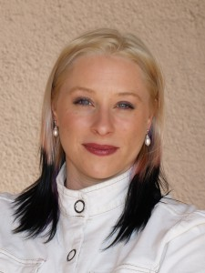

Douglas Rushkoff
His new book, Present Shock: When Everything Happens Now, explores the always-on, simultaneous society in which we live, as well as how this new temporal landscape influences media, culture, economics, politics, and meaning. His previous best-selling books on media and popular culture have been translated to over thirty languages. They include Program or Be Programmed: Ten Commands for a Digital Age, a followup to his Frontline documentary,Digital Nation, and Life Inc, an analysis of the corporate spectacle, which was also made into a short, award-winning film.
His other books include Cyberia, Media Virus, Playing the Future, Nothing Sacred: The Truth about Judaism, Get Back in the Box: Innovation from the Inside Out and Coercion, winner of the Marshall Mcluhan Award for best media book. Rushkoff also wrote the acclaimed novels Ecstasy Club and Exit Strategy and graphic novel, Club Zero-G. He wrote the graphic novels Testament and A.D.D., for Vertigo.
He has written and hosted three award-winning PBS Frontline documentaries – The Merchants of Cool looked at the influence of corporations on youth culture, The Persuaders, about the cluttered landscape of marketing, and new efforts to overcome consumer resistance, and most recently, Digital Nation, about life on the virtual frontier.
His commentaries have aired on CBS Sunday Morning and NPR’s All Things Considered, and have appeared in publications from The New York Times to Time magazine. He wrote the first syndicated column on cyberculture for The New York Times and Guardian of London, as well as regular columns for Arthur, Discover Magazine and The Feature. He also hosted is own radio program on WFMU, The Media-Squat.
Rushkoff has taught regularly for NYU’s Interactive Telecommunications Program, The New School University, the MaybeLogic Academy and the Esalen Institute. He also lectures about media, art, society, and change at conferences and universities around the world.
He has served on the National Advisory Board of the National Association for Media Literacy Education, The Harrington School of Communications and Media at University of Rhode Island, the Board of Directors of the Media Ecology Association, The Center for Cognitive Liberty and Ethics, the United Nations Commission on World Culture, and as a founding member of Technorealism. He is on the Advisory Boards of MeetUp.com, Liquid Information, Artizens, and World Wide Workshop. He has been awarded a Fullbright Scholarship, and Senior Fellowships by the Markle Foundation, the Center for Global Communications, and the International University of Japan. He served as an Advisor to the United Nations Commission on World Culture and regularly appears on TV shows from NBC Nightly News and Larry King to the Colbert Report and Bill Maher. He developed the Electronic Oracle software series for HarperCollins Interactive.
Rushkoff is on the board of several new media non-profits and companies, and regularly speaks about media, society and ethics to museums, governments, synagogues, churches, universities, and companies.
Rushkoff earned his PhD in New Media and Digital Culture from Utrecht University with a dissertation entitled Monopoly Moneys: The media environment of corporatism and the player’s way out. He graduated magna cum laude from Princeton University, received an MFA in Directing from California Institute of the Arts, a post-graduate fellowship (MFA) from The American Film Institute, a Fulbright award to lecture on narrative in New Zealand, and a Director’s Grant from the Academy of Motion Picture Arts and Sciences. He has worked as a certified stage fight choreographer, an SAT tutor, and as keyboardist for the industrial band PsychicTV.
He is just starting a new book for Penguin on digital economics.
Nikos Bentenitis
** UPDATE 1/20/2014 **

Nikos Bentenitis, a colleague of David’s, will be speaking in place of David Johnston, on the same topics of crypto currencies, BItcoin/Master protocol, and Distributed Applications.
Slides available here: http://mastercoineducation.org/da/
David Johnston
In 2013, I co-founded BitAngels.co, the first global veteran entrepreneur & angel network investing in Bitcoin.
In 2011, I co-founded Engine Inc. and began assembling a team of talented programmers to build the Alpha version of the software with the goal of automating our digital lives.
In 2007, I founded General Governance to identify locations for the private provision of security, patrol, restitution, mediation, and arbitration services.
In January of 2007, I co-founded Aquatic Energy LLC and located the development and science teams in SWLA Louisiana. Aquatic has developed the world’s first fresh water open pond algae system for production of high protein meal & omega 3 rich oil. The company received $7.3 million in investment + $7 million of “in kind contributions” from Strategic Partners.
In 2005, I co-founded Baltimore Biodiesel, by 2006 the company received $6 million in funding to construct the largest biodiesel plant in Maryland (5 MGY of production) still in operation.
Heather Schlegel

Heather Schlegel
Heather Schlegel, a trained futurist, is the creator of The Future of Money TV Series. Schlegel started in Silicon Valley in 1996, helping to build and launch over 50 Internet products at over 30 startups. Her academic research focuses on the future of transactions and complementary currencies, including the impact of technology on identity creation and positive wildcards. She is best known by her online presence, heathervescent, and her longstanding consultancy, The Purple Tornado, both of which she uses as launch pads to explore and exploit the intersection of technology, culture and identity.